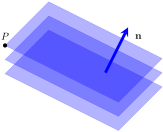

You are probably familiar with the expression “two points determine a line.” This means that given two distinct points, there is exactly one line that passes through both of them. There are other ways to describe a line. For example, as we saw in Section 1.11, a single point together with a direction vector also determine a line.
You are probably also familiar with the fact that three non-collinear points determine a plane. (This is why photographers use tripods for stability, while four-legged chairs often wobble!) Is there another way to determine a plane?
The diagram below shows several planes perpendicular to vector \(\mathbf{n}\text{.}\) In fact, there are infinitely many such planes. Vector \(\mathbf{n}\) does not determine a plane, but if we know of a point \(P\) contained in the plane, then together, \(P\) and \(\mathbf{n}\) describe a unique plane.

Definition1.12.1.Normal Vector.
A nonzero vector \(\mathbf{n}\) is called a normal for a plane if it is orthogonal to every vector in the plane.
Example1.12.2.
The standard unit vector \(\mathbf{k}\) is orthogonal to every vector in the \(xy\)-plane, therefore it is a normal for the \(xy\)-plane.
Given a point \(P_{0} = P_{0}(x_{0}, y_{0}, z_{0})\) and a nonzero vector \(\mathbf{n}\text{,}\) there is a unique plane through \(P_{0}\) with normal \(\mathbf{n}\text{.}\)
This fact can be used to give a very simple description of a plane. Observe that a point \(P = P(x, y, z)\) lies on this plane if and only if the vector \(\overrightarrow{P_{0}P}\) is orthogonal to \(\mathbf{n}\) (i.e. \(P\) lies in the plane if and only if \(\mathbf{n} \cdot \overrightarrow{P_{0}P} = 0\)).
Let \(\mathbf{n}=\begin{bmatrix}a\\b\\c\end{bmatrix}\text{.}\) By ``head-tail" formula (Formula 1.2.3), we have: \(\overrightarrow{P_{0}P} = \begin{bmatrix}
x - x_{0}\\
y - y_{0}\\
z - z_{0}
\end{bmatrix}\text{.}\) So, \(P(x, y, z)\) lies in the plane if and only if
\begin{equation*}
\begin{bmatrix}a\\b\\c\end{bmatrix}\cdot\begin{bmatrix}
x - x_{0}\\
y - y_{0}\\
z - z_{0}
\end{bmatrix}=a(x-x_0)+b(y-y_0)+c(z-z_0)=0
\end{equation*}
We summarize this result as a theorem.
Theorem1.12.3.
The plane through \(P_{0}(x_{0}, y_{0}, z_{0})\) with a normal vector
\begin{equation*}
\mathbf{n} =
\begin{bmatrix}
a\\
b\\
c
\end{bmatrix}\neq\mathbf{0}
\end{equation*}
Find an equation of the plane through \(P_{0}(1, -1, 3)\) with \(\mathbf{n} =
\begin{bmatrix}
3\\
-1\\
2
\end{bmatrix}\) as a normal vector. \begin{explanation} Here the equation becomes
Figure1.12.5.GeoGebra interactive below shows the plane, together with point \(P_0\) and the normal vector. RIGHT-CLICK and DRAG to rotate the image for a better view. A larger version of this activity is available here 2
https://www.geogebra.org/calculator/gsaag2dx
.
As demonstrated in Example 1.12.4, we can distribute coefficients \(a\text{,}\)\(b\) and \(c\) of (1.12.1) as follows:
Setting \(d = ax_{0} + by_{0} + cz_{0}\text{,}\) shows that every plane with a normal vector \(\mathbf{n} =
\begin{bmatrix}
a\\
b\\
c
\end{bmatrix}\) has a linear equation of the form
\begin{equation}
ax + by + cz = d\tag{1.12.2}
\end{equation}
for some constant \(d\text{.}\) Conversely, the graph of this equation is a plane with \(\mathbf{n} =
\begin{bmatrix}
a\\
b\\
c
\end{bmatrix}\) as a normal vector (assuming that \(a\text{,}\)\(b\text{,}\) and \(c\) are not all zero).
Example1.12.6.
Find an equation of the plane through \(P_{0}(3, -1, 2)\) that is parallel to the plane with equation \(2x - 3y = 6\text{.}\)
The plane with equation \(2x -3y = 6\) has a normal vector \(\mathbf{n} =
\begin{bmatrix}
2\\
-3\\
0
\end{bmatrix}\text{.}\) Because the two planes are parallel, \(\mathbf{n}\) serves as a normal for the plane we seek, so the equation is \(2x - 3y = d\) for some \(d\) by (1.12.2). Insisting that \(P_{0}(3, -1, 2)\) lies on the plane determines \(d\text{;}\) that is, \(d = 2 \cdot 3 - 3(-1) = 9\text{.}\) Hence, the equation is \(2x - 3y = 9\text{.}\)
Figure1.12.7.GeoGebra interactive below shows the two planes, together with point \(P_0\) and the normal vector. RIGHT-CLICK and DRAG to rotate the image for a better view. A larger version of this activity is available here 3
https://www.geogebra.org/calculator/unceva9g
.
Subsection1.12.1Linear Equations and their Graphs: From Lines to Hyperplanes
An equation of the form \(ax+by=d\) is a linear equation whose graph is a line in \(\R^2\text{.}\) If we solve for \(y\) in terms of \(x\text{,}\) we obtain a more familiar form of this equation, \(y=-\frac{a}{b}x+\frac{d}{b}\text{.}\) The slope of the corresponding line is \(m=-\frac{a}{b}\text{.}\) Observe that a line perpendicular to this line has the slope \(\frac{b}{a}\text{.}\) If we interpret \(a\) as a horizontal ``run" and \(b\) as a vertical ``rise", we see that the vector \(\begin{bmatrix}a\\b\end{bmatrix}\) is perpendicular to the line \(ax+by=d\text{.}\) You can use the following GeoGebra interactive to solidify your understanding of this.
Figure1.12.8.A larger version of this activity is available here 4
https://www.geogebra.org/calculator/tg2duwqk
.
The idea of coefficients in front of variables forming components of a normal vector should be very familiar to you. Recall that the graph of \(ax+by+cz=d\) is a plane in \(\R^3\) with a normal vector \(\mathbf{n}=\begin{bmatrix}a\\b\\c\end{bmatrix}\text{.}\)
Lines and planes may seem very different, but they are all graphs of linear equations, just in different dimensions. In general, an equation of the form
is called a linear equation in \(n\) variables. The graph of such an equation, for \(n\gt3\text{,}\) is called a hyperplane. The vector in \(\R^n\) whose components are the coefficients \(a_1, a_2, \dots ,a_n\) is orthogonal to every vector in the hyperplane. Unfortunately, hyperplanes are impossible to see, but we can often use insights we gain from working with lines and planes and generalize them to the invisible world of higher dimensions.
Subsection1.12.2Practice Problems
ExercisesExercises
Exercise Group.
Find an equation for each plane described below.
1.
The plane has a normal vector \(\mathbf{n}=\begin{bmatrix}2\\-3\\1\end{bmatrix}\) and the plane passes through the point \((4, 4, -3)\text{.}\)
Answer.
\begin{equation*}
2x-3y+ z= -7
\end{equation*}
2.
The plane contains the point \((-1, 3, 0)\) and is parallel to the plane described by \(2x-5y+4z=7\text{.}\)
Answer.
\begin{equation*}
2x-5y+4z= -17
\end{equation*}
3.
The plane contains the point \((2, 0, 5)\) and is parallel to the \(xz\)-plane.
Answer.
\begin{equation*}
y = 0
\end{equation*}
Exercise Group.
How many planes satisfying each set of conditions are there?
4.
Planes containing \((1, 2, 3)\) and \((4, 5, 6)\) with a normal vector \(\mathbf{n}=\begin{bmatrix}-9\\-9\\-9\end{bmatrix}\text{.}\)